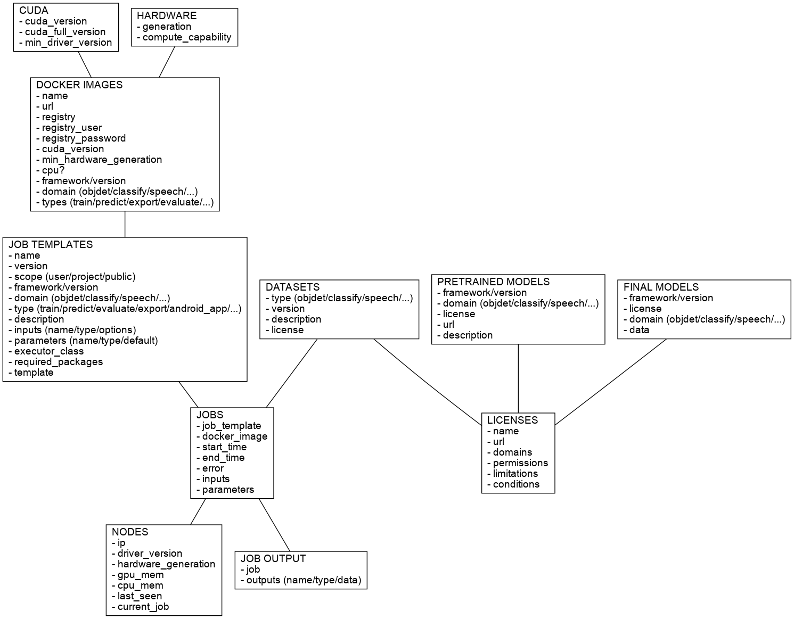

Contains the REST API documentation of the User-friendly Deep Learning (UFDL) framework.
The documentation available here is to be considered work in progress and can change at any given time as the project evolves.
All requests and responses are JSON, unless stated otherwise.
